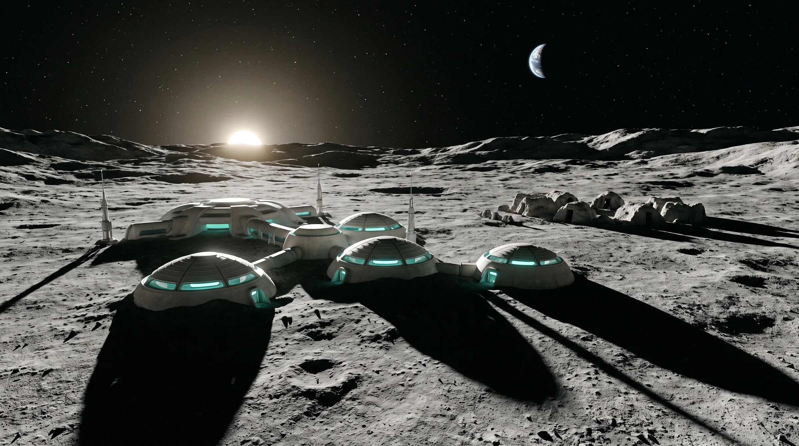

World · Orbit and the Moon · The Compact
Luna Haven
The Compact's founding habitat in the Marius Hills lava tubes; its lattice is its life support
What it is
Luna Haven
- Held by
- The Compact
- How people live
- The day's air budget is posted at every junction in the Tubes. The walls are warm where the lattice runs, and children lean against them to sleep. Lattice keepers are a trade families pass down
- Senses
- Breathing walls, warmth, the Commons with the Earth in its dome
- Lives on
- Its lattice, grown from Martian seed held under treaty licence; and its supply contract with Earth
- Breaks when
- The lattice is harmed (people stop breathing), or the Continuity lets a cargo slot slip
- In the Story Bible
- the World · Daily Life
Places within it
Where the chapters go
- The CommonsCh 7, 10
- The RowsCh 7, 10, 13, 15, 20 · session room
- The TubesCh 7, 10, 13
- The WardCh 10, 15, 20
Senses
On the page so far
- light
Ch 07Haven's Commons: a cavern made into a square, grown walls in long honey-lit ribs, handrails at every height, tall narrow doorways, everyone speaking low; children play a soft-ball game in high arcs · The Commons
Ch 07Haven's night dims the Tubes; a choir rehearses and the rock carries it to the Commons. · The Tubes
Ch 10The session room: the four keepers lie along the long couch with their uncapped sockets against the wall; the Lantern's coupling head is a grey Charter drum the size of a bucket with the Foresight mark, clamped to the wall at the couch's head, its cable running under the door to the surface mast; it speaks in the Spire's procedural voice ("Coupling live", "Sweep complete. Coupling released"); the walls brighten slightly during the sweep. · The Rows
Ch 13The lattice light runs under the wax and doesn't take it in. · The Rows
Ch 15The lever pulled; the lattice grey around the couch · the lever
- sound
Ch 07Haven people leave a pause before answering even face to face.
- smell
Ch 20The Ward smells of bread proving, as the deep rows do when the lattice works hard. · The Ward
- touch
Ch 10At shift change children sleep sitting against the warm walls, waiting for parents off the night shift.
Ch 15Inside: Haven felt as warmth and breath, crops drinking, water climbing, the dome cold; people as weight and warmth, not thoughts; children asleep against walls
Ch 20Sleepers are turned with a hand under the head so it doesn't touch the wall, and laid with a folded towel between them and the grain; they press toward the warm anyway. · The Ward
- weather
Ch 07Earth hangs in the dome over the old skylight and never sets, with a brown haze over the Gulf that has been on the morning boards for a week. · The Commons
Ch 20The monitors over the medic's station run seven traces and, under them, the Gulf Crescent's heat deaths over twenty-four hours, then yesterday's, larger; Haven has family down there. · The Ward
- plants
Ch 10The Ward's beds are grown into the wall. · The Ward
- look
Ch 07The Rows are cooler than the Commons; the session room has a grown couch and shelf, and by the door a steel lever on a heavy hinge, striped yellow and black, worn bright at the grip, with no power, no lattice, no system. · the lever
Ch 20The scope is still on the wall; the couch lies grey a body's length where the lever came down, and has not come back. · The Rows
- signage
Ch 07The junction board is slate, chalked by hand: AIR TODAY, full the day before, 94 that morning, 92 on a recount by a keeper's apprentice. · the junction slate
Ch 10Haven's junction slate shows AIR TODAY back at a hundred, with the ghosts of 94, 92 and a lower number under it. · the junction slate
Ch 13Haven's junction slate reads ninety-eight. · the junction slate
Ch 13The scope in grease pencil, square capitals, on the wall beside the lever at the eye level of someone lying on the couch: E. VÁZQUEZ. ONE SESSION. TEN MINUTES. / EXIT AT TEN, OR AT THE KEEPER'S WORD. / THE LEVER IS THE KEEPER'S. / IF PULLED, IT IS OVER. NOT REPEATED. / M. EKEBERG, KEEPER AND WITNESS. · The Rows
Ch 13Older scopes rubbed out with the heel of a hand show higher on the wall. · The Rows
Ch 15The junction slate still reads ninety-eight. · the junction slate
Ch 20Under the ninety-eight, in the scope's square hand: CHILDREN OFF THE WALLS AT NIGHT. FOLD SOMETHING BEHIND THEM. · the junction slate
- layout
Ch 20Mara meets nobody at the arrivals lock, ever; carts of crop trays pass through the bay.
Arcs
What changes here
- The coupling drum · power
- The junction slate · air
Chapters set here
On the page here
Who has been here
People on the page here


Noted on the page
What else the chapters have shown
- Ch 07The cargo (nitrogen and filter beds) is four days late; the slot slipped on Tuesday 29 March; the freight office's reason was Handled.
- Ch 10Haven keepers talk of the Gulf's early heat as a fever that hasn't broken; most have mothers there.
- Ch 20Children sleep against folded blankets, coats and straw-stuffed crop sacks, a hand's width from the wall; keepers move them back when they slide toward the grain.
- Ch 20The final calibration swept Haven's wall every half hour from 4 June until the lock was lost on Mars on the fifth; nobody needs to be on the wall once the drum is live.
- Ch 20Haven has never had a dog.